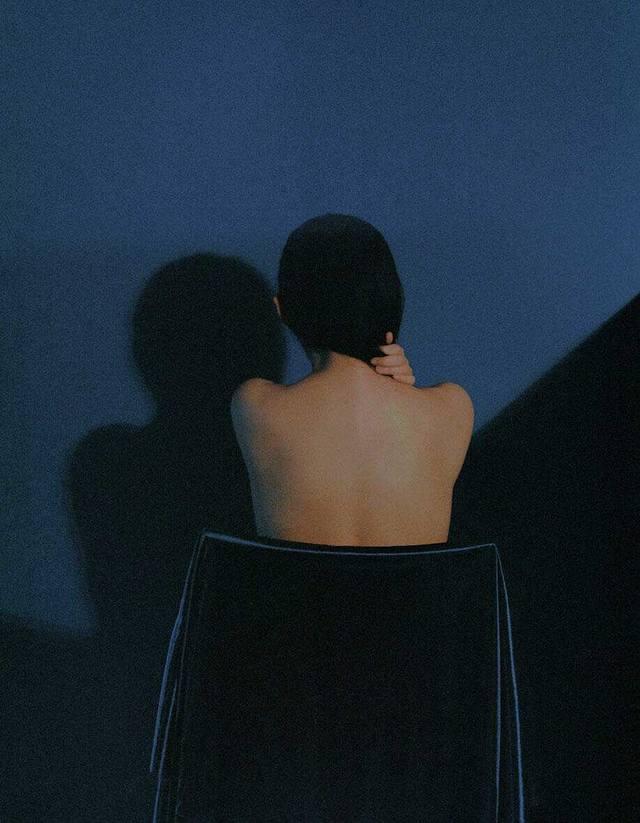
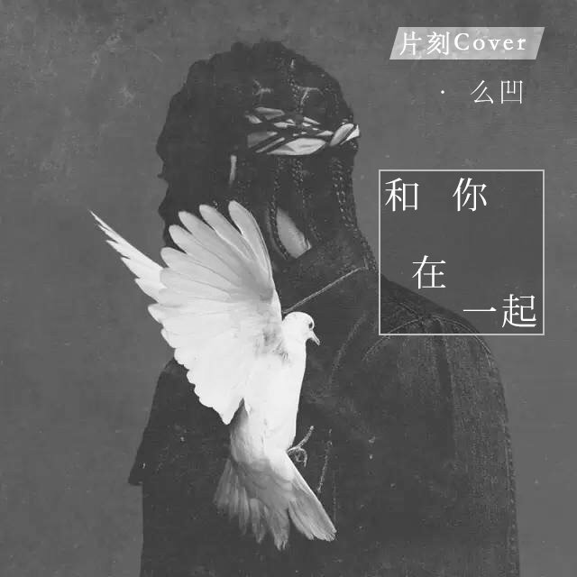

阅读 | Read
黄泉馆·倒霉鬼
By / 子夜辰星
By / 子夜辰星
---
1. 俗话说，人走运的时候，出门就能捡到钱。人倒霉的时候，喝凉水都能塞着牙缝。人的运势自然是有起有落，有高有低。VIEW ALL
685次阅读 | 评论:0 | 喜欢:34

当我谈跑步时，我在谈爱情
By / 阿帆哒
By / 阿帆哒
---
2. 我辞职的理由是回家。在北京，平均跳槽时间是一年半，在所有辞职理由中，不到百分之二十是真实的。我在这家创业公司做了两年，职位是设计师，老板待我很好。 VIEW ALL
2.2 k次阅读 | 评论:44 | 喜欢:616
超能力
By / Whale小诺
By / Whale小诺
---
01 路过小区里公园的花坛时，她往往会在原地停留了片刻，像是在等候什么一样。等候之余，她会四处看看，趁没人注意的时候，她还会蹲下来，“喵喵喵”的叫 VIEW ALL
363次阅读 | 评论:2 | 喜欢:23

TING

人气片客 | Hot Pianker


关于我们 友情链接 片刻帮助 意见反馈 成长记忆
All rights reserved © 2016 pianke.me /蜀ICP备12022689号-1